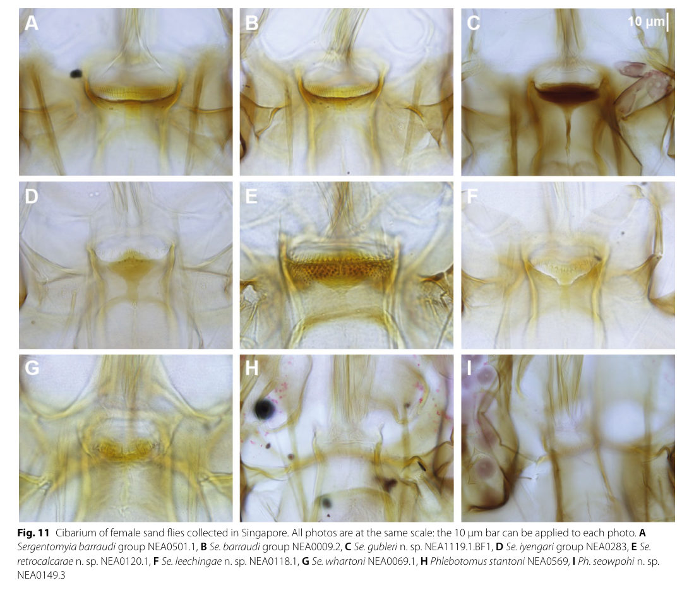

Species › Sergentomyia › ungrouped
Sergentomyia whartoni
| Classification | Genus Sergentomyia, ungrouped |
|---|---|
| Status | Synonym of S. perturbans in Lewis 1978; used as valid by Ding et al. 2025 |
| Distribution | Peninsular Malaysia, Singapore | Records in the project regions: Bangladesh, Cambodia, India, Indonesia, Laos, Malaysia, Myanmar, Thailand, Vietnam (Galati et al. 2025) |
| Thailand | Thailand (Galati et al. 2025) |
| Diagnostic notes | Galati et al. 2025 (p. 28) list it as Sergentomyia (Neophlebotomus) whartoni Lewis, 1957. |
| Sources | Lewis 1978, Ding et al. 2025, Galati et al. 2025 |
⚠ Conflicting characters
| Character | Source A | Source B | Type | Comment |
|---|---|---|---|---|
| Species status | Lewis 1978: Synonym of S. perturbans | Ding et al. 2025: Used as valid name (identity of S. perturbans doubtful) | name change | |
| Subgenus | Ding et al. 2025: taxa.csv: ungrouped | Galati et al. 2025: S. (Neophlebotomus) whartoni Lewis, 1957 (p. 28) | different interpretation | See C18 (status). |
How it keys out
This taxon is not reached by any key in this collection (described or recognised later). Use the diagnostic notes and the original description.
The chain of characters leading to this taxon in each key (a ready-made diagnosis).
Figures

